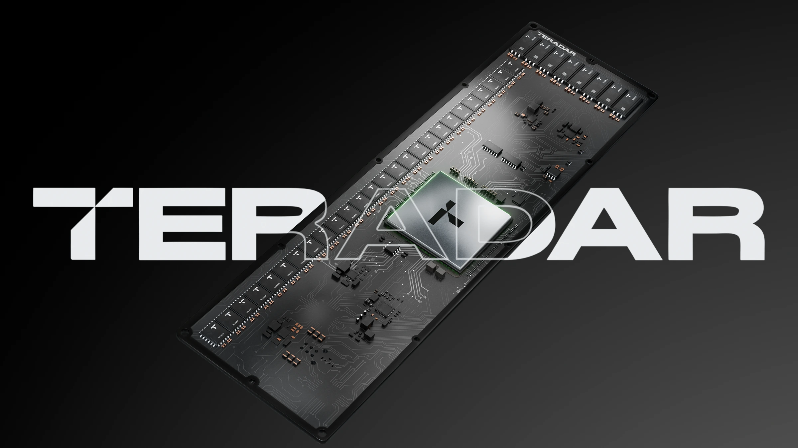
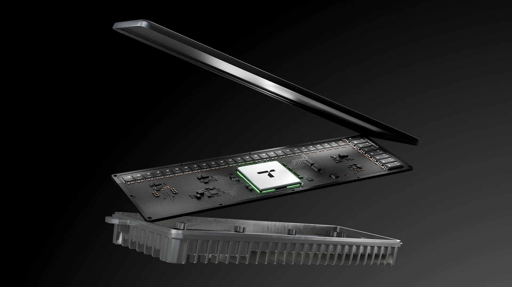
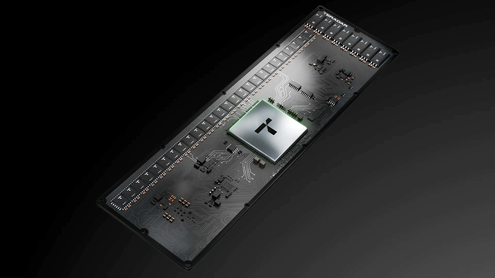
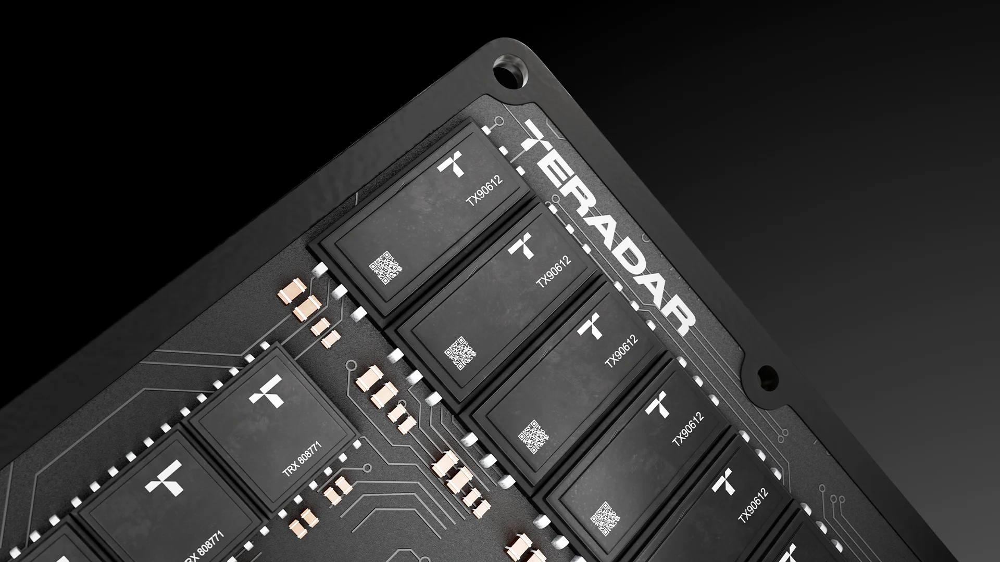
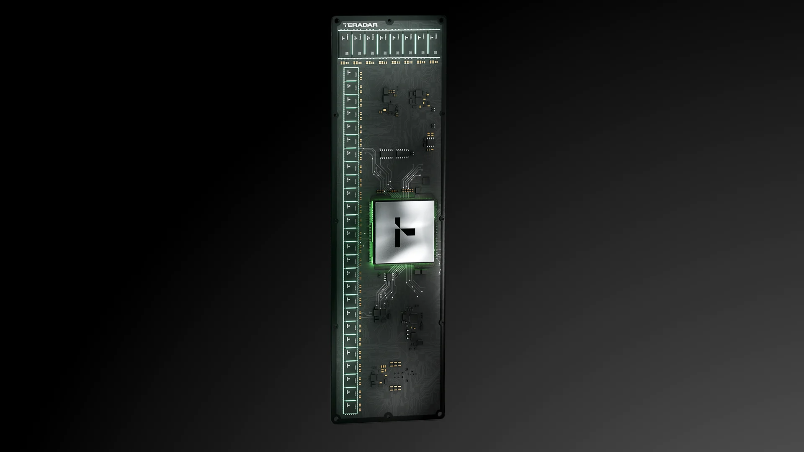
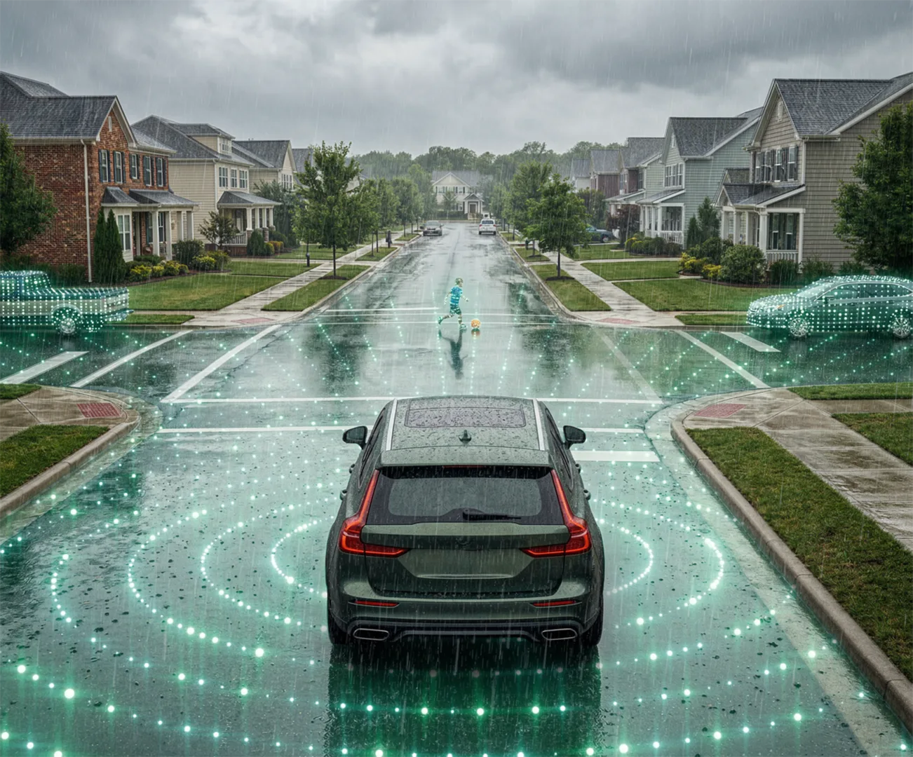
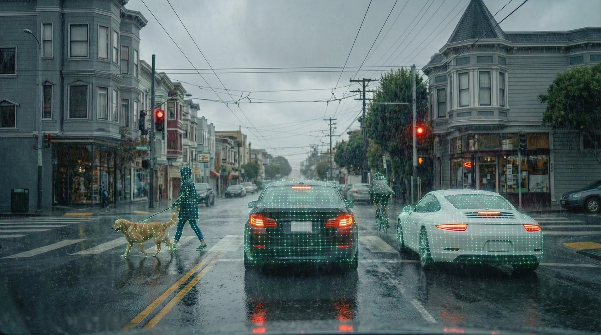
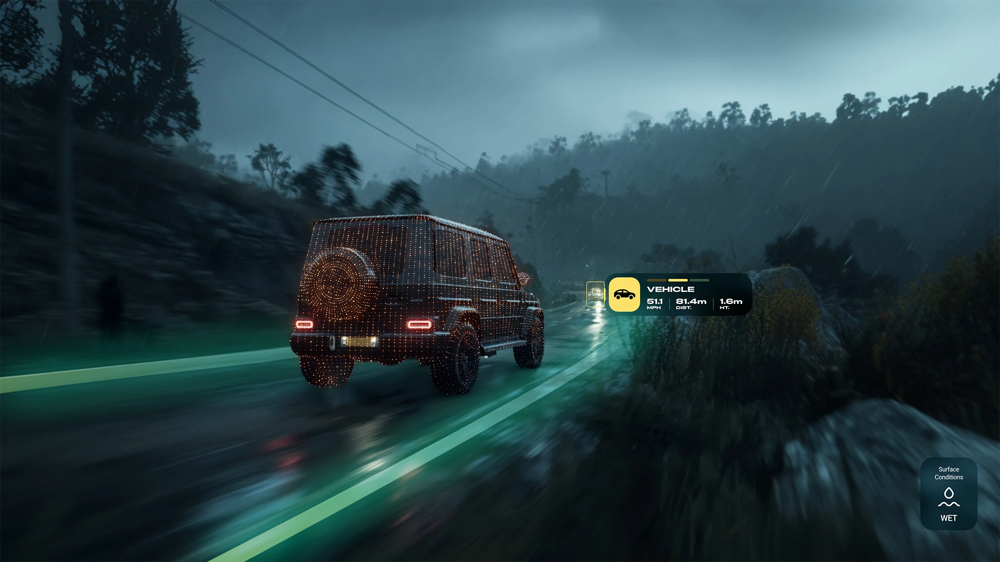
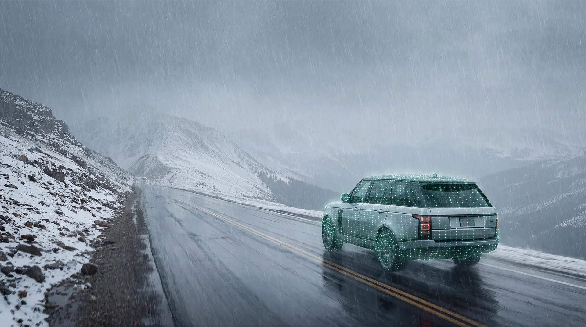
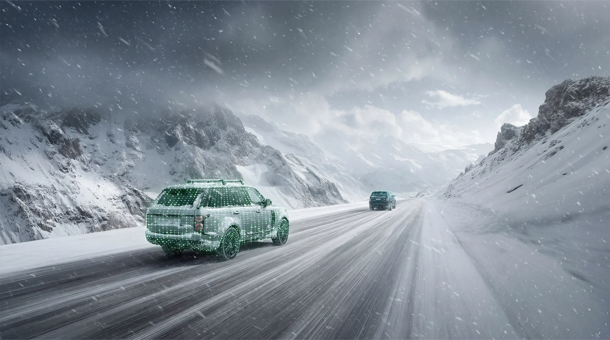

Product
The device.
A conceptual design, not a realistic engineering model — I modeled and textured this version of the device purely for attractive renders, used across marketing and the Teradar website.




Point Cloud System
Why a custom system, not just AI.
AI alone isn't consistent between results — running the same prompt twice gives different point distributions. So the point-cloud system was built directly in Blender, procedurally, to be reliably repeatable across every render.
Some of the AI-generated environment images shown here weren't created by me — what I built is the point-cloud system, applied consistently on top of them.





